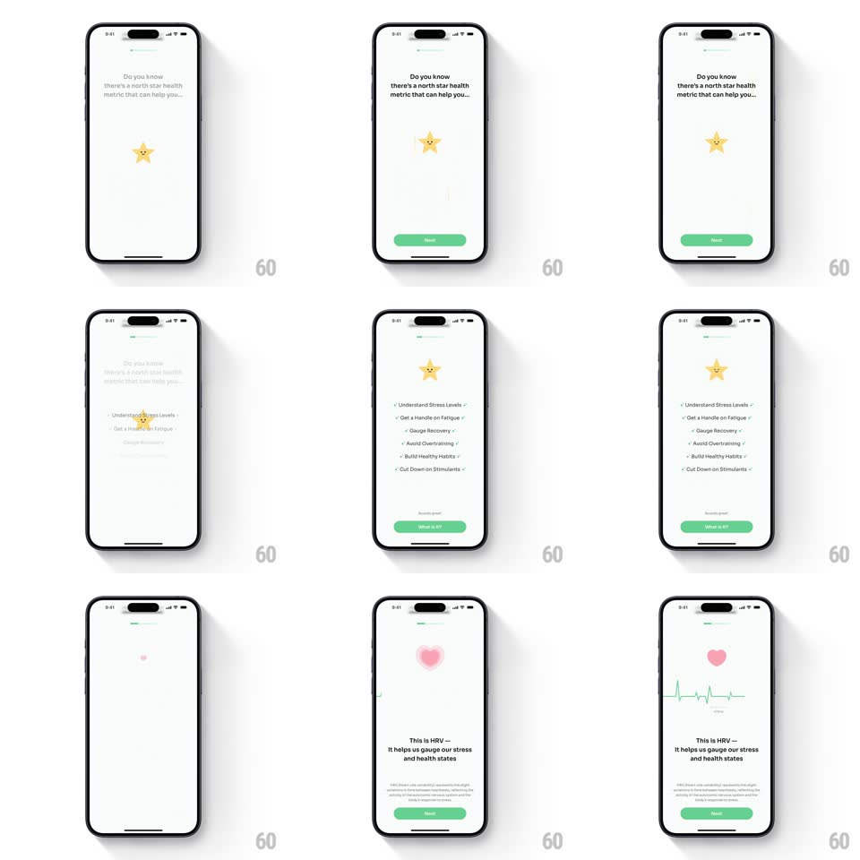

Media
Frame-by-frame

Rebuild this animation 1:1: StressWatch's HRV explainer onboarding - a bouncing yellow star mascot under "Do you know there's a north star health metric that can help you...", a staggered benefit checklist, then a pink heart that pops and a green ECG trace that draws itself.

Rebuild this animation 1:1: StressWatch's HRV explainer onboarding - a bouncing yellow star mascot under "Do you know there's a north star health metric that can help you...", a staggered benefit checklist, then a pink heart that pops and a green ECG trace that draws itself.
## Integration
Integration: stack-agnostic spec - springs given as stiffness/damping, timed motions as duration + curve; map every value to your framework and animation library of choice.
## Scene
Soft off-white onboarding pages: progress dots top, centered copy, yellow five-point star mascot with a tiny face, green Next button. Page 2: checklist of six green-checked benefits ("Understand Stress Levels" through "Cut Down on Stimulants"). Page 3: pink heart, "This is HRV - It helps us gauge our stress and health states", ECG line.
## Motion spec
Pattern: mascot-led staggered explainer sequence.
- The star drops in from above with a bounce (spring ~260/16, ~600ms, two visible rebounds) then idles with a gentle squash-and-stretch bob (2s loop).
- Headline types/fades in line by line (200ms per line).
- Checklist items stagger in from the left (translateX -12px + fade, 250ms each, 90ms apart), each green check popping with a scale 0.5 -> 1 spring (~400/20, 200ms).
- Page turn: star exits upward, pink heart scales in (0 -> 1, spring ~300/18, ~450ms with overshoot) and beats (scale 1 -> 1.12, 2 pulses, 700ms).
- The ECG trace draws left to right (900ms, ease-in-out), spikes sharp; a soft glow follows the pen point.
## Calibration
- The mascot bounce is physical: squash on land (scaleY 0.85 for 120ms) before settling.
- ECG draws once and holds - not a loop.
## Reduced motion
Elements fade in place; ECG appears pre-drawn.
## Don't miss
- Star mascot has a face - it reads as a character, not an icon.
- The checklist checks are chips with tiny arrows, each row tappable-looking but static here.